1. Java入门
Java是SUN公司在95年推出的编程语言，2009被甲骨文收购
Java是纯面向对象，类似的编程语言还有C++ , C#
Java优点：
简单易学（相对于C++，去掉了指针，去掉了手动内存回收）
支持多线程
安全性好
跨平台运行
适合大型网络平台Java缺点：
不适合做窗体程序，适合做web应用
由于需要跨平台，所有采用虚拟机机制，运行效率略低
Java的技术分为三个版本：
JavaSE（Java Standard Edition标准版）：俗称java基础，用来开发桌面应用，C/S结构网络应用
JavaEE（Java Enterprice Edition企业版）：用来开发企业环境下的应用程序，通常是Web开发，JavaEE包含JSP，Servlet，EJB等技术
JavaME（Java Micro Edition 微型版）：用于小型智能设备开发，早期用于开发塞班手机系统的app（已经被淘汰！）
版本号：
Java1.0 未普及的版本
Java2.0 里程碑版本，j2se j2ee j2me
Java3.0
Java4.0
Java5.0 里程碑版本 JavaSE JavaEE JavaME
Java6.0
Java7.0
Java8.0Java的三个核心机制：
Java虚拟机机制（Java Virtual Machine）：Java语法首先编译为Class字节码，在不同系统上安装特定的虚拟机来把class文件转换为不同系统的机器码运行
垃圾回收机制：Java利用一个后台守护进程自动进行垃圾回收，程序员无法精确干预，一般都是系统空闲自动运行
代码安全性检测：自动检查代码安全
编译性语言：把源代码直接提前先转化为机器码，然后再执行，常见就是C C++ C#
解释性语言：一边编译一般执行，常见HTML CSS JAVASCRIPT SQL PHP Python
Java是半编译半解释的语言
JDK（Java开发工具包）：负责源代码编译为字节码，不负责运行
JRE（Java运行环境）：负责运行java程序的
JVM（Java虚拟机）：是JRE的一部分，是运行Java的核心机制
一个基本的HelloWorld程序
- 创建一个.java扩展名的类的源文件，在Java中最小的程序单元就是一个类
- 类名和文件名必须相同
- 声明一个类和一个主方法（main方法，入口方法）
- Javac命令编译源代码为字节码class类文件
- Java命令解释运行字节码class文件
HelloWorld代码示例：
1 | public class HelloWorld { |
一些必要的环境变量配置：
JAVA_HOME：可选，用于其它的java产品自动找到要使用的jdk环境，比如tomcat
path：配置java的外部命令的路径，可以在任何位置执行这些命令，例如javac编译命令，java运行命令，javap反编译命令
classpath：类路径，默认就是. 代表当前目录位置
主方法的语法规则：必须是public static void main(String[] 参数名)
目前主流的java开发IDE工具是：eclipse和Intellij idea
Eclipse的工作空间（workspace）：默认项目的存放目录，对eclipse的所有设置信息都会存放在这个目录中
Eclipse的万能快捷键：alt + /
变量和数据类型
Java的变量都是强类型（JavaScript是弱类型），每一个变量在声明的时候必须明确数据类型
Java的标识符命名规则：
不能使关键字
字母，$符号，下划线开头，后面可以字母，数字，$符号，下划线
严格区分大小写
Java的标识符命名规范：
类名每个单词首字母大写，变量，方法名，第二个单词首字母大写
Java数据类型划分：
基本类型：8种
整型：包括十进制 八进制 十六进制
byte 1字节（8个位bit） -128~127
short 2字节 -32768~32767
int 4字节 -2147483648~2147483647 整型直接量默认都是int型
long 8字节 -92233720368554775808~ 92233720368554775807 直接量需要加L或l
浮点型：
float 4字节 单精度浮点数 直接量需要加F或f
double 8字节 双精度浮点数 浮点数直接量默认都是double型，或加D或d
字符型：
char 2字节 无符号 0~65535 直接量必须用单引号包括 ，可以直接赋值字符例如’a’ 十六进制表示 ‘\uXXXX’ 也可以直接赋值数字 ，特殊字符 \n \r \t
布尔值：
boolean 1字节 true和false 不能和数字做任何转化
引用类型：4种
类 class
数组
接口 interface
枚举 enum数据类型转化：
自动转换（隐式转换）：小类型赋值给大类型
强制转换（显式转换）：大类型赋值给小类型，如果超过存储范围，则截取对应的位数其他的丢弃
在Java中byte，short，char三种类型允许直接赋int型的不超过范围的直接量
数据存储形式：原码 反码 补码
原码：数字直接转换为二进制，第一位是符号位，0代表正数 ，1代表负数
例如 ：12的原码是00001100 -12的原码 10001100
反码：正数的反码和原码相同，负数的反码是将原码的符号位之外的位逐位取反
例如：12的反码是00001100 -12的反码11110011
补码：正数的补码和原码相同，负数的补码是将反码+1
例如：12的补码是00001100 -12的补码是11110100计算机存储数据使用的是补码，原码和补码之间的换算都是反码+1
String类型在java中是引用类型，但是java为了方便使用对string做了特殊处理，允许用=直接赋值直接量，String的直接量是双引号括起 例如 “hello,world” “中国” “a” “”
算数运算符：+ - * / % ++ –
在Java中的所有运算，运算结果的数据类型以参与运算运算的最大类型为准，运算的结果最小类型就是int
自增自减运算本身就带类型转换
比较运算符 > < >= <= == !=
布尔值和引用类型不能直接用比较运算符比较，只能用==和!=比较
逻辑运算符 &逻辑与 |逻辑或 !逻辑非 &&短路与 ||短路或 ^异或
赋值运算符 = += -= *= /= %= 特殊赋值运算符都自带类型转化
字符串拼接运算 + 运算符两边有一个String类型，就执行拼接字符串运算，而不是数学运算
三目运算符 表达式？值1：值2
位运算：按照二进制进行运算
位与& 位或| 异或^ 求反~ 有符号右移>> 有符号左移<< 无符号右移>>>
main方法参数叫做运行时参数：在运行java类的同时传入实参，多个值用空格分隔，自动形成以string数组
语法结构
1 | Switch(){ |
- 如果不写break，当条件为真，执行完case语句后，会无条件执行后面的所有语句
- default语句位置任意，不一定放到最后
- 表达式必须是int兼容类型（byte short char int），String类型，enum枚举类型三种情况之一
- case后面只能跟常量，不能写变量
- case后面的值不能重复
循环语句：
for while do..while forEach（遍历数组或集合对象）只要布尔表达式为 true，循环体会一直执行下去。1
2
3while( 布尔表达式 ) {
//循环内容
}
对于 while 语句而言，如果不满足条件，则不能进入循环。但有时候我们需要即使不满足条件，也至少执行一次。
do…while 循环和 while 循环相似，不同的是，do…while 循环至少会执行一次。布尔表达式在循环体的后面，所以语句块在检测布尔表达式之前已经执行了。 如果布尔表达式的值为 true，则语句块一直执行，直到布尔表达式的值为 false。1
2
3do {
//代码语句
}while(布尔表达式);
虽然所有循环结构都可以用 while 或者 do…while表示，但 Java 提供了另一种语句 —— for 循环，使一些循环结构变得更加简单。
for循环执行的次数是在执行前就确定的。语法格式如下：
1 | for(初始化; 布尔表达式; 更新) { |
for 循环：
最先执行初始化步骤。可以声明一种类型，但可初始化一个或多个循环控制变量，也可以是空语句。
然后，检测布尔表达式的值。如果为 true，循环体被执行。如果为false，循环终止，开始执行循环体后面的语句。
执行一次循环后，更新循环控制变量。
再次检测布尔表达式。循环执行上面的过程。
Java 增强 for 循环
Java5 引入了一种主要用于数组的增强型 for 循环。
Java 增强 for 循环语法格式如下:
1 | for(声明语句 : 表达式) |
break 关键字
break 主要用在循环语句或者 switch 语句中，用来跳出整个语句块。
break 跳出最里层的循环，并且继续执行该循环下面的语句。
continue 关键字
continue 适用于任何循环控制结构中。作用是让程序立刻跳转到下一次循环的迭代。
在 for 循环中，continue 语句使程序立即跳转到更新语句。
在 while 或者 do…while 循环中，程序立即跳转到布尔表达式的判断语句。
数组
数组是多个相同类型数据的组合
数组属于引用类型,数组型数据是对象，数组中的每个元素相当于该对象的成员变量
在Java中数组是定长，一旦声明，长度不可改变
声明数组类型： 类型 [] 变量 类型 变量[]
创建数组对象的三种方式：
1 | int[] a = new int[4]; |
在string类中 == 比较的是内存地址
在string类中equals比较的是值
StringBuffer类
1 | Append()在字符串末尾追加 |
方法声明
1 | <访问修饰符> <静态修饰符（可以省略）> <返回值> <方法名>（参数列表）{ |
访问修饰符：public protected default private
静态修饰符：static(属于类)
返回值：byte short int long double float boolean char String 数组 枚举（8中基本
数据类型和引用类型和void）
<方法名>：首个单词字母小写，其余首字母大写
参数列表：可以为空，也可以写一个或多个，如果写多个，参数与参数之间必须用逗号隔开；(参数类型 参数，参数类型 参数)
返回值：写在方法结束处或if等语句里，返回值代表这个方法的返回数值；返回数值的类型一定要与返回值一致；可以是空；
方法的重载
1，必须在同一个类中
2，方法名必须相同
3，列表不相同(参数个数不同，参数类型不同)；
4,返回值不一致不会影响重载
//优势 简化了命名的复杂度你，给编程带来很大的遍历
面向对象
类class：概念上的定义
对象object：具体的一个事物，也称为对象实例
面向对象的三大基本特征：
1 封装
2 继承
3 多态声明类的语法：
1 | [<修饰符>] class <类名> { |
类的修饰符：只能是public（公有）或者默认default（就是不写）
声明属性：[<修饰符>] 数据类型 属性名
声明方法：[<修饰符>] <返回类型> <方法名称>([参数列表]) {
方法语句
}
方法的形参和实参必须个数，顺序，类型必须是一致的
对象的属性默认值：
byte 0
short 0
int 0
long 0L
float 0.0f
double 0.0
char ‘\u0000’ 空字符
boolean false
所有的引用类型，默认值都是null（空指针）
类图：
是UML（统一建模语言）的九种图之一，表达类的结构和类与类之间的关系
类名
属性
构造方法
方法
权限修饰符 + public公有 -private私有 #protected受保护的
公有权限修饰符 public：成员属性或成员方法可以在任何地方访问
私有权限修饰符 private：成员属性或成员方法仅能在当前类中访问
封装：
属性私有化，提供公有的setXxx和getXxx对属性进行赋值和取值操作，boolean类型属性，getXxxx应该叫做isXxx，目的防止调用者传入不合理的值
构造器（构造方法）：
用途就是创建对象的同时初始化属性值，通过new语句调用
默认构造器：如果类中没有任何构造器，那么java默认会自动在类中添加一个隐式无参构造器
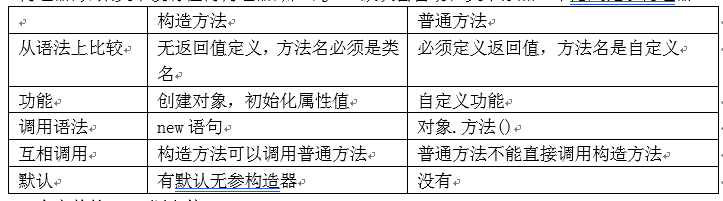
一个完整的java源文件：
[包声明] 如果java源文件直接放到src根目录，就没有包声明，认为放在默认包，不推荐使用默认包，因为其他包中类无法调用默认包中的类
包声明的语法： package 顶层包.子包.……; 包声明必须是第一样有效代码
[导入声明]+ import语句
如果调用的类和当前类是在同一个包中，可以直接调用，如果调用的类不在同一个包中，有两种方式：
- 写完整类名（包名.类名）
- 添加导包声明 （导包快捷键 ctrl+shift+O），导包并不包括子包，java中只有java.lang包中的类是自动导入的
[类声明]+ 一个java源文件可以写多个类，但是只能有一个public类，而且public类必须和文件同名
软件开发规范：
包名必须小写，一个项目的顶层包：网站后缀.公司名.项目，例如 com.ibm.erp com.hp.print
注释：
// 单行注释
/* / 多行注释
/* */ 文档注释，可以通过javadoc命令把注释直接转换为文档，属性，方法，构造器，类本身都应该使用此注释
标识符命名规范
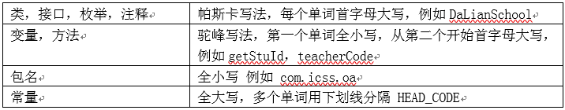
基本类型：
都是以值的形式存在，只能存储单一数据结构
引用类型：
都是以对象实例形式存在，能够存储复杂（复合）数据结构
对象的属性赋值顺序：
- 属性默认值
- 等号显式赋值
- 构造器赋值
- set方法赋值
值传递（用等号赋值，参数传递）
基本类型：传递的就是值本身
引用类型：传递的是对象的引用
如果用一个空对象null，调用对象的成员，会发生空指针异常的错误
this永远代表当前对象
局部变量和全局变量（属性）
局部变量：声明在方法内部，作用域仅限于声明变量所在的语句块（块级作用域）或方法体，生命周期进入语句块创建，退出语句块就销毁
全局变量：声明在类内部，方法外部，作用域是整个类，随着对象的创建而创建，随着对象的销毁而销毁
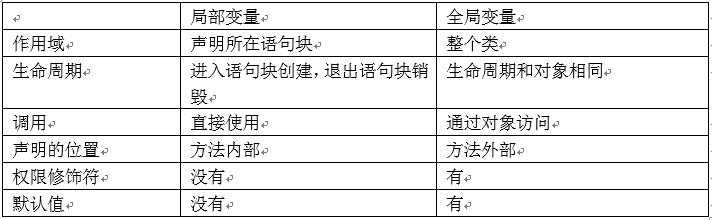
类设计
继承的目的：减少代码冗余，尽量代码重用
- 谁继承谁？子类（衍生类，派生类）继承父类（超类，基类）
- 怎么继承？ extends 语法
- 继承了什么？ 继承父类的属性和方法，构造器不能继承，私有属性能继承，由于权限修饰符的限制，直接访问不了
- 继承类图
- Java中是单继承：一个子类只能直接继承一个父类，但是一个父类可以有多个子类
- Object类是所有类的根类，任何类没有显式继承其他类，默认继承就是Object，任何类都直接或间接继承了Object
访问权限修饰符
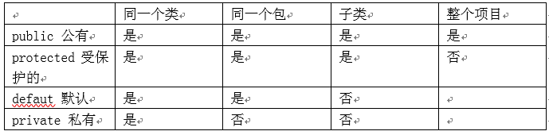
public公有：整个项目
protected受保护的：同一个包的类，不同包的子类
default默认：同一个包的类
private私有：当前类
方法的重写（覆盖）override：子类重写父类的方法，把功能改造
- 为什么要重写父类的方法？ 继承的功能不一定适合子类，所以要进行功能的改造
- 能不能重写当前类的方法？不能，只能子类重写父类的方法，重写方法只能存在于子类和父类之间
- 重写覆盖方法的规则：
a) 子类重写方法的权限修饰符必须大于等于父类的方法的权限修饰符
b) 重写方法的返回值类型必须和父类方法相同或兼容
c) 方法名称必须相同
d) 方法的参数列表必须一致（参数的个数，顺序，类型必须一致）
e) 子类重写方法不能比父类方法抛出更多异常
方法的重载overload：避免声明多个不同名称的方法，而是利用一个方法传入不同的参数来实现不同的功能
重载方法的规则：
- 方法名称必须相同
- 参数列表必须不同（参数的个数，顺序，类型至少有一个不同）
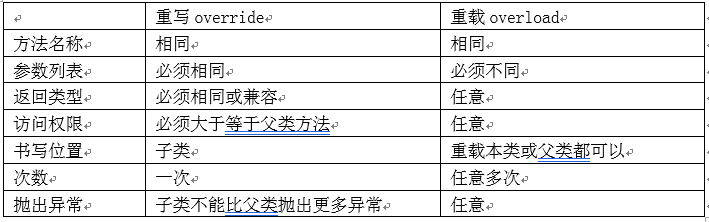
可变长参数：
为了解决参数任意个数的情况，原理就是一个一维数组，可变长参数必须是参数列表中的最后一个参数 …三个点 int … i
this使用的三种方式：
- this代表当前对象的引用
- 可以在局部变量和属性同名的情况下使用属性
- 调用本类的构造方法，this() 调用其他重载构造器
super使用的两种方式：
- 访问父类的成员
- 调用父类的构造器
关于构造器的几点说明：
- 如果一个类没有显式定义任何构造器，java会自动给这个类定义一个无参构造器
- 构造器不能被继承
- 构造器调用语句，不管是this()还是super()调用，都必须写在构造器的第一行
- 如果构造器中没有任何显式调用构造器语句，那么java会自动的在构造器第一行加入super()语句调用父类无参构造器
- 对构造器的调用会一直延伸到Object类
多态：
具体的表现像是，就是引用类型的向上转型，一般来说就是一个子类的对象实例赋给一个父类的类型变量
多态对象：多态对象一定具有多态性
- 多态对象只能访问父类的成员
- 但是如果父类的方法被子类重写，实际调用的是子类的重写方法（虚拟方法调用）
编译类型：决定的是对象访问成员的列表
运行时类型：代表的是当前对象真正的对象实例类型
引用类型的转换
自动转换：从子类到父类的类型可以自动转换
强制转换：从父类到子类的类型必须强制转换没有继承关系的类型转换是非法的，自动转换和强制转换都不可以（编译错误）
★类型转换成功和失败取决于运行时类型是否和转换的目标类型是否兼容，而不是编译类型
多态的实际作用：减少方法的重载
instanceof运算符：
对象 instanceof 类型，如果对象是指定类型或类型的子类，返回true，否则返回false，判断以运行时类型为准，而不是编译类型
没有继承关系的instanceof运算是非法的
默认的Object的equals方法实现和==功能相同，需要子类自己重写这个方法才能实现判断内容相等，很多类已经重写实现了equals方法，例如String Date 所有的包装类 File等
hashCode()：返回当前对象的哈希码，默认是当前对象内存物理地址的后八位转化而成
重写equals方法的同时也应该按照规则重写hashCode()方法
重写hashCode()的原则：如果两个对象equals为true，那么两个对象的hashCode()必须相同，如果两个对象equals为false，那么两个对象的hashCode()必须不同
Object的hashCode()方法主要用在Set集合中判断元素是否重复：Set集合首先判断元素的哈希码是否相同，如果哈希码不相同，则直接认为元素不重复，哈希码相同，再判断equals比较，如果equals也为true，才认为是重复元素
Class对象代表运行时的类信息，存储的是类型本身的信息，例如属性信息，方法信息，构造器信息，每个类型都有自己的Class对象，甚至基本类型也有自己的Class对象，相同类型的Class对象一定相同，在第一次使用某个类型的时候这个类型的Class对象会自动创建
Object的getClass()方法：
返回当前对象的类型的Class运行时类
Object的toString()方法：
默认返回当前对象的运行时类型的名称和16进制的哈希码拼接字符串，推荐子类重写这个方法，一般返回的都是属性值拼接字符串
toString()的两处隐式调用：
1 打印对象 2 对象和字符串做拼接运算
Object的finalize()方法：在当前对象被垃圾回收器回收之前自动回调的方法
包装类：
8种基本类型都对应一个类类型，称作包装类，包装类的主要作用就是基本类型和引用类型之间的数据类型转换
装箱：基本类型转换为包装类类型
拆箱：包装类类型转换为基本类型
JDK1.5之后允许自动装箱拆箱，但是必须是匹配的基本类型才可以
包装类实际开发中最常用的功能是和String做转换
高级类特性
static静态修饰符：
修饰的成员称作静态成员和对象实例无关，成员是属于类本身的，静态成员存储在方法区，方法区存储的是方法的代码和静态成员
static能修饰哪些东西？
类：不能，但是能够修饰内部类
属性：可以，称作类属性或静态属性
方法：可以，称作类方法或静态方法
局部变量：不能
构造方法：不能
静态成员的生命周期：静态成员会在类加载的时候创建到内存，当第一次使用某个类之前就会加载这个类到内存中，静态成员会常驻内存永不销毁
静态方法不能直接调用当前类的非静态成员（实例属性，实例方法），必须通过对象调用，非静态方法可以直接调用当前类的静态或非静态成员
静态代码块：可以在类中写多个静态代码块，位置任意，会在类加载的时候自动执行，就执行一次，一般都是初始化某些静态成员，或者只需要执行一次的语句
1 | static { |
静态导入：
import static，和import不同的是，导入的不是类，它导入的是类中的静态成员，好处是可以省略类名调用
23种设计模式：设计模式就是特定功能的特定写法
单例模式：希望一个类只能创建一个对象，外部调用者使用的永远是一个对象实例
懒汉模式：只有用到这个对象实例才会创建对象
饿汉模式：提前创建对象实例
final
final终态修饰符：修饰类，变量（局部变量和属性），方法
final类：不能被其他类继承，无子类，防止子类误重写父类方法某些特定固定的功能
final方法：不能被子类重写
final变量：都是常量，常量只能赋一次值，常量规范单词全大写。单词用下划线分隔
abstract抽象修饰符：
抽象类：没有实现所有的功能，留了一部分功能让子类去实现
抽象方法：不提供方法的具体实现，只有声明方法的语句，没有{ }
1.有抽象方法的类一定是抽象类
2.抽象类不一定有抽象方法
3.抽象类不能创建实例对象，但是可以有构造方法，可以通过子类来创建对象实例
4.抽象类可以继承抽象类或非抽象类，单继承
5.抽象类和抽象方法不能用final修饰
6.子类继承抽象类必须重写实现所有抽象方法，否则也必须是抽象类
以下修饰符不允许和abstract同时使用：final static private
模板方法设计模式：在方法中调用抽象方法，子类不同实现的功能也不同
接口本身也是一种数据类型 interface，是引用类型，也有成员属性和方法，接口允许一个类实现多个接口
声明接口：<修饰符>interface 接口名{······}
接口中的成员：
属性：必须是公有的静态的常量 不写默认public static final常量
方法：必须是公有抽象方法，不写默认就是 public abstract
构造器：没有，接口不能被实例化
接口和类是实现关系，类实现接口，一个类可以实现多个接口，接口和实现类之间也可以形成多态
类实现接口：implements 接口1，接口2，······
接口和接口之间是多继承关系，一个接口可以继承多个接口
接口的用途：
- 实现了多继承(接口和接口之间)
- 代码规范（正规开发规范，先写接口声明所有要实现的功能，再写一个实现类具体实现功能）
- 可以和类形成多态，传参数更灵活
- 由于接口中都是抽象方法，可以强迫实现类必须重写这个功能
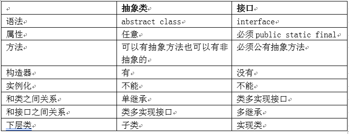
面向对象的关系总结：
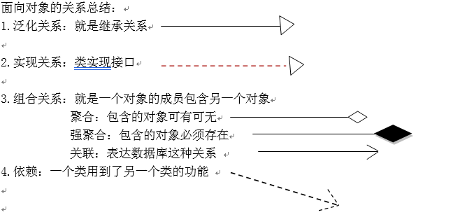
面对对象的三种关系：
Is a：泛化 实现
Has a：组合
Use a：依赖
23种设计模式之简单工厂模式：通过一个方法直接得到特定的对象实例，而不需要new
枚举enum：也是一种引用数据类型，存储固定的几种取值，例如 月份 星期几
枚举类型的成员：都是枚举常量，枚举常量的数据类型就是枚举本身
内部类：在一个类中定义的类，就是内部类
实例内部类：没有加static的内部类，内部类所在的外部类中创建对象就直接创建，在其他类中创建内部类对象，用“外部类的对象.new”的语法创建，访问和内部类同名的外部类属性，用“外部类名.this.属性”，实例内部类的好处是可以直接访问外部类的成员而不需要创建外部类对象
静态内部类：加static的内部类
局部内部类：声明在方法内部类，局部内部类可以直接访问方法中的final局部变量
匿名：没有名字的内部类，匿名类主要作用就是简化创建子类或实现类的语法
异常处理
Java程序运行过程中所发生的异常事件分为两类：
错误（Error）：致命异常，没有处理的必要，例如内存溢出，虚拟机中病毒
异常（Exception）：正常异常可以在程序中处理之后，继续运行程序，例如空指针，下标越界，网络连接错误
异常类的层次：在Java中每个错误和异常都有一个对应的类
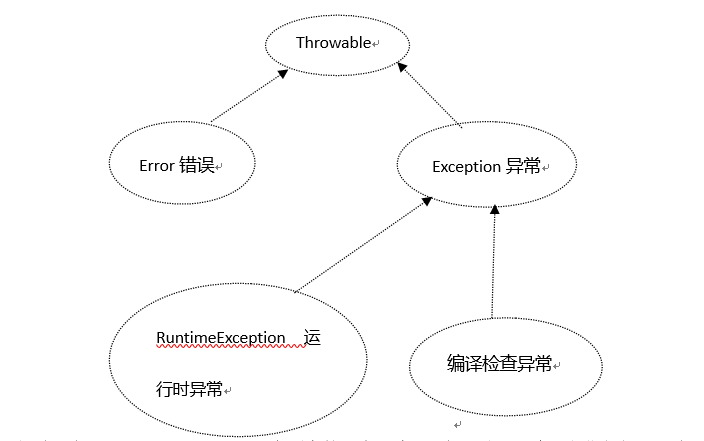
运行时异常：RuntimeException和它所有的子类，编译不提示错误，在运行期间抛出异常编译检查异常：编译期间直接提示错误
Java程序在运行期间如果发生异常，首先会创建一个对应异常类型的异常对象实例，抛出这个异常对象，如果代码中有对应处理这个异常类型的语句，则执行异常处理语句，如果没有，打印堆栈消息，程序自动终止
处理异常：
1 | try { |
异常对象常用API：
getMessage();返回异常错误信息
printStackTrace();控制台打印错误堆栈信息
throws语句：抛出异常声明，当前方法不处理这个异常，抛给调用者处理这个异常，throws语句可以抛出多个异常，throws 异常1，异常2……，throws抛出的一般都是编译检查错误
子类重写方法不能比父类方法抛出更多异常
throw语句：抛出异常给虚拟机，会产生异常，创建指定类型的异常类的对象，然后throw抛给虚拟机
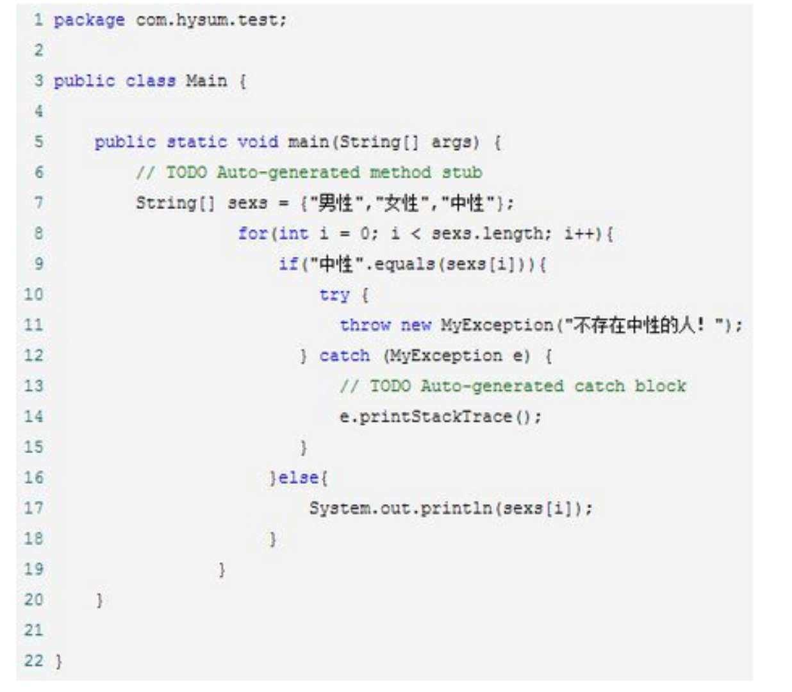
自定义异常类：编写一个类，继承任何一个异常类即可
表示层try catch
业务逻辑层 数据访问层 throws
IO
文件操作类File：File对象直接映射一个物理文件或目录，映射的文件或目录可以是不存在的
java.util.Date 存储年月日时分秒
java.sql.Date 存储年月日
SimpleDateFormat类 把String和Date类型进行互相转换
Java的File的delete方法不允许删除非空目录
Input输入数据流 Output输出数据流
字节流：以字节为单位操作，适合 操作二进制数据
根类：InputStream OutputStream
字符流：以字符为单位操作，适合操作纯文本数据
根类：Reader Writer
FileInputStream FileOutputStream 文件字节输入输出流
FileReader FileWriter 文件字符输入输出流
BufferedReader BufferedWriter 字符输入输出缓冲流，本身没有直接操作数据流的能力，属于处理流，需要配合节点流操作数据
PrintWriter 本身就是一个节点流，也可以带缓冲功能
缓冲区特点是只有数据填满缓冲区才会自动刷新缓冲区（输出数据）
Windows 所有文件输出流都是自动创建文件(如果文件不存在)
输出流默认是覆盖写入
Windows系统换行符是\r\n linux系统的换行符是\n
InputStreamReader OutputStreamWriter
↑字节流通往字符流的桥梁
总结如下
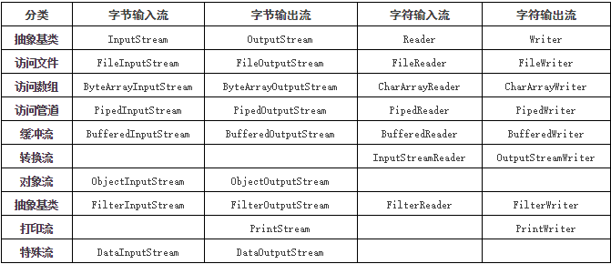
序列化：把对象实例持久化存储到文件中 ObjectOutputStream
反序列化：把文件中的对象实例读取到java对象中ObjectInputStream
序列化对象必须已经实现了Serializable接口
反射和注解
反射核心类是Class类
Class对象就是每个类型都拥有一个运行时类，这个类是对象实例，甚至基本类型都有运行时类包含了类型信息（属性信息，方法信息，构造器信息）
反射的核心思想就是把属性，方法，构造器也当做一个对象，目的就是动态操作属性方法构造器
Java反射框架主要提供以下功能：
1.在运行时判断任意一个对象所属的类；
2.在运行时构造任意一个类的对象；
3.在运行时判断任意一个类所具有的成员变量和方法（通过反射甚至可以调用private方法）；
4.在运行时调用任意一个对象的方法
重点：是运行时而不是编译时
首先我们了解一下JVM，什么是JVM，Java的虚拟机，java之所以能跨平台就是因为这个东西，你可以理解成一个进程，程序，只不过他的作用是用来跑你的代码的。上图是java的内存模型，我们关注的点，一个方法区，一个栈，一个堆，初学的时候老师不深入的话只告诉你java的内存分为堆和栈，易懂点吧！
假如你写了一段代码：Object o=new Object();
运行了起来！首先JVM会启动，你的代码会编译成一个.class文件，然后被类加载器加载进jvm的内存中，你的类Object加载到方法区中，创建了Object类的class对象到堆中，注意这个不是new出来的对象，而是类的类型对象，每个类只有一个class对象，作为方法区类的数据结构的接口。jvm创建对象前，会先检查类是否加载，寻找类对应的class对象，若加载好，则为你的对象分配内存，初始化也就是代码:new Object()。上面的流程就是你自己写好的代码扔给jvm去跑，跑完就over了，jvm关闭，你的程序也停止了。
为什么要讲这个呢？因为要理解反射必须知道它在什么场景下使用。
题主想想上面的程序对象是自己new的，程序相当于写死了给jvm去跑。假如一个服务器上突然遇到某个请求哦要用到某个类，哎呀但没加载进jvm，是不是要停下来自己写段代码，new一下，哦启动一下服务器，（脑残）！
反射是什么呢？当我们的程序在运行时，需要动态的加载一些类这些类可能之前用不到所以不用加载到jvm，而是在运行时根据需要才加载，这样的好处对于服务器来说不言而喻，举个例子我们的项目底层有时是用mysql，有时用oracle，需要动态地根据实际情况加载驱动类，这个时候反射就有用了，假设 com.java.dbtest.myqlConnection，com.java.dbtest.oracleConnection这两个类我们要用，这时候我们的程序就写得比较动态化，通过Class tc = Class.forName(“com.java.dbtest.TestConnection”);通过类的全类名让jvm在服务器中找到并加载这个类，而如果是oracle则传入的参数就变成另一个了。这时候就可以看到反射的好处了，这个动态性就体现出java的特性了！举多个例子，大家如果接触过spring，会发现当你配置各种各样的bean时，是以配置文件的形式配置的，你需要用到哪些bean就配哪些，spring容器就会根据你的需求去动态加载，你的程序就能健壮地运行。
获得Class运行时类的三种方式：
1.对象.getClass()
2.类型.class
3.Class.forName(完整类型名)
得到构造器的方法
1 | Constructor getConstructor(Class[] params) -- 获得使用特殊的参数类型的公共构造函数， |
获得字段信息的方法
1 | Field getField(String name) -- 获得命名的公共字段 |
获得方法信息的方法
1 | Method getMethod(String name, Class[] params) -- 使用特定的参数类型，获得命名的公共方法 |
常用方法
class类.newInstance() 创建对象
类属性.getName()获得属性名
类属型.getType().getName()获得属性值的类型
类属型.get(实例对象) 用反射获得实例对象的值
类方法.getReturnType().getName()获得返回值类型名
1 | public static void main(String[] args) throws NoSuchMethodException, SecurityException, IllegalAccessException, IllegalArgumentException, InvocationTargetException { |
注解
annotation：@Xxxx，能够用程序读取出来的一种特殊注释，注解也算一种数据类型
实际主要在框架应用中代替xml做配置
内置注解：
@Override：当前方法必须是重写方法，否则直接编译错误
@Deprecated：修饰已过时方法
@SuppressWarnings：禁止Java编译器产生警告
自定义注解：
1 | <修饰符>@interface <注解名> { |
返回值只能是：基本类型，String，Class，枚举，Annotation注解类型
注解的注解
@Target(ElementType.METHOD) 只能修饰方法
@Target(ElementType.FIELD) 只能修饰属性
@Target(ElementType.TYPE)只能修饰类
@Retention(RetentionPolicy.RUNTIME) 表示JVM运行期间此注解存在
@Retention(RetentionPolicy.CLASS) 表示仅在class文件中存在，运行期间不存在
@Retention(RetentionPolicy.SOURCE) 表示仅在java源代码中存在，编译之后丢失
常用类
Math 数学类，提供了和数学相关的一些API
String 字符串类：String对象时不可修改的字符串，String是不可变类，字符串内容创建
StringBuffer类：保存可修改的字符串对象，线程安全的（同步执行）
StringBuilder类：功能同StringBuffer，都是可变字符串，线程不安全（异步执行）
由于Java的数组是定长的，不能自由添加删除元素，集合类是变长的
集合类的结构图
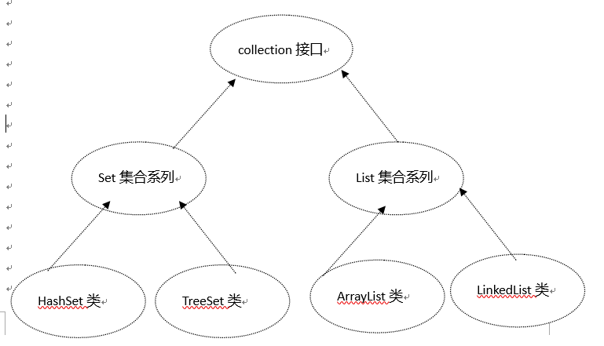
Set集合
特点是不能存储重复元素，元素没有顺序
HashSet类：哈希表散列结构
TreeSet类：可以用自然顺序对元素进行排序，排序的对象必须实现Comparable接口，重写compareTo方法
List集合
特点有下标能存储重复元素，元素有顺序
ArrayList：线性表结构，结构上最接近数组结构，就是一个可变长数组，查找元素快，插入删除元素慢
LinkedList:链表结构，查找元素慢，插入删除元素快。
Vector：同ArrayList，是同步的（线程安全的）
泛型
generic type：主要目的就是减少类型转换次数，避免类型转换的代码风险，在创建对象的同时就明确数据类型，代替传统的万能的Object类型
泛型的核心思想就是把数据类型本身也当成参数来传递，类型参数化
如果没有传入泛型参数，默认就是Object类型，泛型不支持基本类型
1 | package chapter14; |
传入泛型参数的时机：
- 创建对象
- 实现接口
- 调用方法（泛型方法，调用方法的同时传入泛型参数）
1
2
3<? extends 类型A> 兼容类型A的子类型
<? super 类型A> 兼容类型A的父类型
<?> 兼容任何类型Map集合
Map集合：特点就是存储键值对（key-value），常用实现类就是HashMap和HashTable，Map集合的键不能重复
HashMap：线程不安全的（异步）
HashTable：线程安全（同步）
属性文件：.properties 可以配置键值对性质的一些数据
properties类：可以直接加载配置文件1
2
3
4
5
6
7
8
9
10
11
12
13
14
15
16
17
18
19
20
21
22
23
24
25
26
27
28
29
30
31package chapter14;
import java.io.IOException;
import java.io.InputStream;
import java.util.Properties;
public class TestProperties {
public static void main(String[] args) throws IOException {
//输入流
InputStream is = TestProperties.class.getResourceAsStream("config.properties");
//创建Properties对象
Properties p = new Properties();
//加载流
p.load(is);
//关闭流
is.close();
//返回属性值
System.out.println( p.getProperty("username") );
System.out.println( p.getProperty("password") );
System.out.println( p.getProperty("ip") );
System.out.println( p.getProperty("port") );
}
}多线程
应用程序是由多个进程组成，一个进程是由多个线程组成的线程是独立执行的程序的最小单位
Java应用程序本身就是一个独立的进程，默认情况下只有一个线程，就是main方法执行的主线程，通过主线程可以创建更多的线程
CPU一个核心同一时刻只能执行一个程序（进程）
抢占式：一个程序运行之后独占CPU使用权，执行完了才能执行下一个进程
事件片式：给每个程序分配执行时间，时间到了必须让出CPU使用权，让下一个程序执行
一个线程的组成：CPU使用权创建一个新的线程两种方式：
继承Thread类：重写run方法
Thread类的常用API：synchronized 同步修饰符：当前修饰方法或语句块线程执行期间，同一时刻不允许其他线程执行这段代码(同步执行)1
2
3
4
5
6run()：线程体，多线程执行的具体代码
start():启动线程，一个线程对象只能启动一次
currentThread()：返回当前正在执行的线程对象
sleep():线程休眠若干毫秒，强制让出CPU
join():线程合并
yield():让出CPU，到就绪状态
线程的生命周期:
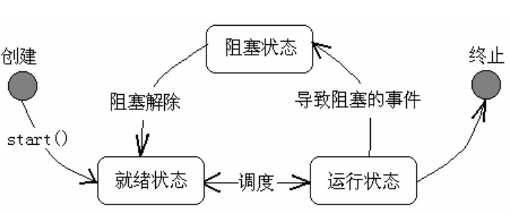
Object类中线程相关方法：
wait():让调用当前对象的线程进入到等待区，必须由其他线程唤醒
notify/notifyAll():唤醒等待区的其他线程，notify随机唤醒一个等待的线程，notifyAll唤醒等待区的所有线程继续执行
wait()和notify()必须在synchronized语句块中执行
最早的是AWT技术
后来出现了Swing，界面好看的
最后SWT技术
JFframe的匿名方法（在构造器里写）
1 | btn2.addActionListener(new ActionListener() { |
软件测试
黑盒测试：不需要了解软件代码细节，只测试功能
白盒测试：需要写测试脚本或者直接写软件开发代码
单元测试（单体测试）：测试某个具体功能，例如某个方法，Java中使用JUnit技术
综合测试：测试整个项目的功能，前后端联调测试等
Junit技术是java单体测试技术：需要junit.jar文件支持，Junit的测试方法必须加上@Test注解，必须没有返回值和参数，必须void的无参方法，@Before 前置执行 @After后置执行
Jar文件：就是类库打包为一个jar压缩文件
命令行运行Jar文件：java –jar xxx.jar
JDBC
Java DataBase Connection (Java连接数据库)：java中操作数据库的技术
Java没有提供任何操作具体某种数据库的API，真正实现数据库操作的是数据库厂商提供的第三方类库（jar包）
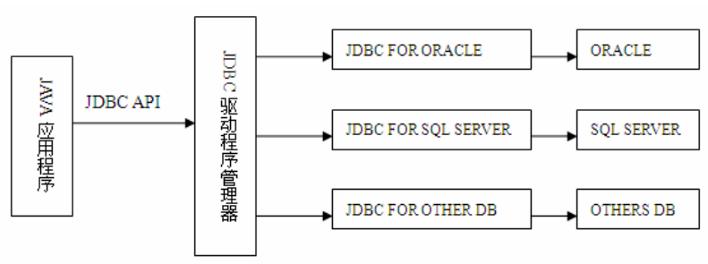
在eclipse中使用第三方类库，需要配置构建路径，项目右键—buildpath—configure build path
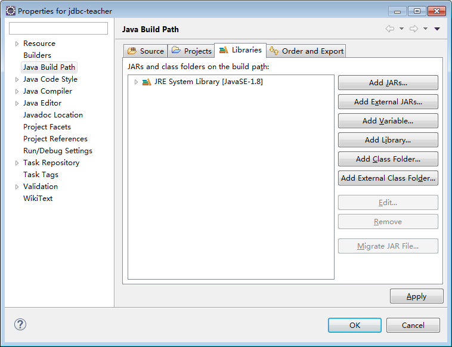
JDBC操作数据库的流程：
1 | 1. 注册驱动 |
ResultSet对象代表查询结果集的游标(cursor) 指针 ,游标指向哪一行，读取的就是哪一行的数据，默认指向第一行
返回游标当前行的列值
方式1：rs.getXxxx（索引） 更快 推荐用索引
方式2：rs.getXxxx（列名）
6.逆向关闭对象，释放内存
执行查询：executeQuery();
执行DML：excuteUpdate();
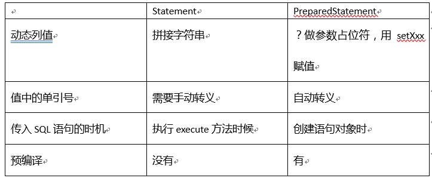
CallableStatement 调用存储过程和函数的语句对象
可滚动游标指针：游标不仅可以向下滚动，也可以上移，也可以直接跳跃到指定行
从数据库原理来讲，游标只能向下移动
游标的ResultSetType：
TYPE_FORWARD_ONLY :默认，游标只能向下移动，效率最高
TYPE_SCROLL_INSENSITIVE：可滚动游标，结果集更新不可视，原理就是把查询结果一次性放到Java虚拟机的一个数组中，然后通过下标读取记录，如果数据量过大肯呢过会导致JVM内存溢出
TYPE_SCROLL_SENSITIVE：可滚动游标，结果集更新可视，查出结果集的rowid放到一个大数组中，然后通过rowid再去访问原始数据
游标的只读还是可以修改
CONCUR_READ_ONLY:默认，只读游标
CONCUR_UPDATABLE:可以通过ResultSet直接进行增删改
元数据：数据库信息，表的信息，列的信息，查询结果的结构信息
批处理：把多条SQL语句形成一个批处理，一次性发送到数据库执行，提高效率
默认情况下jdbc在执行execute方法后会自动提交事务
数据库连接池：事先创建好N个连接对象，重复使用，提高系统的运行效率
分页程序：
前端分页：后端把json数据传递给前端，前端形成一个数组，通过下标来分页，数据量较大的时候，浏览器容易内存溢出
后端分页：
内存分页：利用jdbc的可滚动游标，把数据一次性查询到java虚拟机中，然后用游标进行分页，数据量较大的时候，JVM容易内存溢出
SQL分页：利用SQL语句直接在数据库中执行分页函数，java所得到的就是一页数据，推荐使用JavaEE
JavaEE(Java 企业版)：JSP Servlet EJB(EJB被其他第三方技术大量代替)
JavaEE运行环境：JSP/Servlet容器，常用的容器有tomcat，jboss，glassfish，weblogic，
websphere
Servlet版本：最新的3.1，早期是2.5，语法有一定的差异，很多xml配置可以用注解来配置
Eclipse的Web项目工程结构
.settings：当前项目工程的配置文件
build：编译之后的class文件
src：java源代码文件
WebContent：Web资源（html，css，javascript，图片，视频）
META-INF：配置EJB远程调用
WEB-INF：
lib 第三方jar包
web.xml 部署描述文件（核心配置文件）
Servlet技术
就是一种通过http请求调用执行的类（通过URL调用）
任何Servlet类，都必须直接或间接实现Servlet接口

修改服务器端代码，必须重新加载web应用
创建Servlet的方式（xml配置形式）
1.创建类继承httpServlet父类
2.重写doGet和doPost方法
3.配置web.xml 部署描述文件
1 | <servlet> |
第二种创建Servlet的方式（注解配置形式）
1.创建类继承httpServlet父类
2.重写doGet和doPost方法
3.@WebServlet(value=”/类名 “) 注解
/开头路径：
客户端代码：代表服务器根目录
服务器端代码：代表的web应用根目录Servlet的生命周期
1.当第一次请求Servlet，会自动创建servlet 对象实例，执行init初始化方法
2.每一次请求都会执行service方法service根据请求方式自动调用doGet或者doPost
3.当Servlet对象实例被销毁之前，自动调用destroy（tomcat只有关闭应用才会垃圾回收Servlet对象）
init，service，destroy称为servlet对象的生命周期
Servlet是单实例多线程：一个Servlet只会创建一个对象实例，所有的请求使用的都是同一个对象，不同客户端可以并发请求同一个对象实例，每一次请求都会产生独立的线程
Servlet的虚拟URL地址，在同一个WEB应用中不可以重复
为了线程安全，防止多线程并发访问Servlet对象时数据混乱，永远不要使用全局变量，要使用局部变量！
Get和Post请求区别
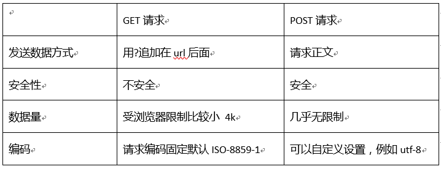
HttpServletRequest 请求对象
HttpServletResponse 响应对象：当每次浏览器发送请求到服务器，服务器端都会自动创建两个对象（请求对象，响应对象），传递并调用service方法
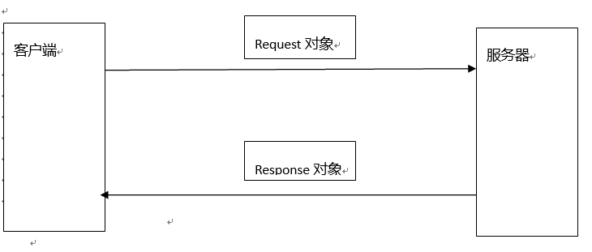
中文转码
get方法：
post方法：request.setCharacterEncoding(“utf-8”);
一个完整的HTTP请求包含三部分信息
请求行：协议版本，请求方式，请求URL
请求报头：包含了客户端的相关信息
请求正文：发送的请求参数数据，GET请求没有请求正文请求对象的API
1 | getParammeter(“参数名称”)：返回客户端请求参数 |
响应对象的API
1 | response.setContentType("text/html;charset=utf-8")：设置MIME类型和编码 |
请求转发
对资源A发出请求，资源A直接把请求直接转发给资源B，资源B给出客户端响应，只会发出一次请求，请求转发之前不能有任何数据响应到客户端，否则转发会失效
request.setAttribute(“username”,”tom”);
request.setAttribute(“userpwd”, 123456);
String username = (String)request.getAttribute(“username”);
Integer userpwd = (Integer)request.getAttribute(“userpwd”);
重定向
对资源A发出请求，资源A给出响应，通知浏览器对资源B发出请求，资源B给出响应，会发出两次请求
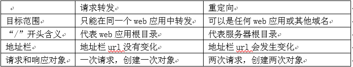
范围对象：都具有存储键值对的方法，setAttribute() getAttribute() removeAttribute();
Request：在请求范围中存储数据
Session：仅限于一个会话的范围，同一个会话可以共享数据
ServletContext：全局对象，范围是整个web应用，一个web应用只有一个ServletContext上下文对象
ServletContext 常用功能
1 | 1.在范围中共享键值对数据 |
会话 Session
在Web开发中，同一个机器的同一种浏览器的窗口，算一个会话Session
Http是无状态连接：客户端发出请求时连接服务器，得到响应后，就关闭连接，好处可以节省客户端和服务器的连接通信耗费的资源，缺点是
会话跟踪
1 | 就是跨请求保留共享数据，有四种写法： |
Cookie
就是存储在客户端的一个文本键值对
会话级：存储在客户端的浏览器进程中，浏览器关闭就销毁
硬盘级：存储在客户端的浏览器临时文件夹中，可以设置失效时间
Cookie只能由写入Cookie的那个域读取，例如百度无法读取新浪写入的Cookie
和H5的web本地存储技术相比，Cookie的区别是每次请求都会把当前域所有的cookie内容发送给服务器端，而H5的web本地存储不会把数据发送到服务器端，是纯前端操作
Session是存储在服务器端的一个对象，数据类型HttpSession，session的生命周期是从会话第一次发出请求创建（实际上只有调用了request.getSession()语句才会创建session对象），产生一个session对象，包含一个唯一的sessionId，然后以会话级cookie的形式把这个sessionId写入到客户端,以会话最后一次发送请求为准，如果超过超时时长（tomcat默认是30分钟）没有发送任何请求，服务器会自动销毁这个session对象
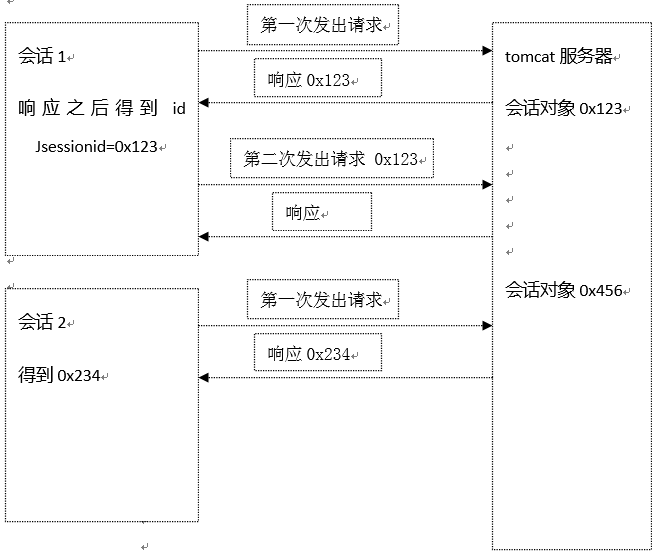
在浏览器禁用cookie情况下，服务器端无法把sessionid传递给客户端，session将无法共享数据，解决办法是通过url手动重写传递jsessionid，语法是url;jsessionid=sessionid值
设置session默认的超时时长（tomcat默认是30分钟）
方式1：修改web.xml文件，整个web应用生效，单位是分钟
1 | <session-config> |
方式2：代码设置当前会话，单位是秒
1 | session.setMaxInactiveInterval(5); |
开发思想
分离式开发：前后端完全分离，前端（PC前端，H5前端，App）都是和统一的服务器数据访问接口进行通信，需要大量使用ajax请求
JSP开发：大量的使用请求转发把数据传递到JSP，利用用java技术生成页面按照三层架构思想
xxx.html/xxx.jsp(表示层) servlet(表示层) service(业务逻辑层) dao(数据访问层)
按照MVC设计模式：
Model(模型) View(视图) Controller(控制器)
xxx.html/xxx.jsp(视图) servlet(控制器) service(模型) dao(模型)
在web中处理异常的两种方式
声明式异常：就是在web.xml中进行配置，设置发生异常的错误页的url地址
程序式异常：在Java代码中写try/catch，然后手动跳转到error页
过滤器Filter：对用户的请求进行拦截，执行一段自定义代码
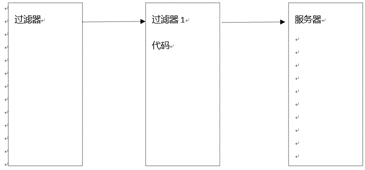
创建过滤器
1 创建类实现Filter接口
2 实现init，destroy，doFilter三个抽象方法
init 初始化方法：过滤器第一次加载时执行
destroy销毁方法：过滤器对象被销毁之前执行
doFilter：每一次请求都执行这个方法
3 在web.xml中配置过滤器，一个filter可以对应多个filter-mapping（也可以用@WebFilter 注解）
1 | <!-- 配置过滤器别名 --> |
过滤器的拦截URL常用写法：
/* 过滤所有请求
/abc/* 过滤abc下的所有请求
*.html 仅过滤某个扩展名的请求，不能加斜杠开头
监听器：8个监听器，可以划分为三大类，ServletContext相关的，HttpSession相关的，Request相关的，监听器主要就是监听三大范围对象的生命周期和键值对存储的事件
三大框架
早期的三大Java企业级框架：Spring Struts2 Hibernat（SSH）
后期的三大Java企业级框架：Spring SpringMVC MyBatis（SSM）
未来预计Java企业级框架：SpringBoot
框架的核心思想是用配置代替编程
XML配置
注解配置MyBatis
是apache开发的一款基于Java持久化框架，持久化框架一般来说都是指数据库操作框架，类似框架式Hibernate
Hibernate是全自动框架，自动生成SQL语句，执行效率低
MyBatis是半自动框架，需要手写SQL语句，执行效率高
MyBatis核心配置文件，名称任意，例如mybatis-config.xml 位置必须放到类路径下
MyBatis执行数据库操作的配置流程：
1 | 1.在类路径创建核心配置文件，例如mybatis-config.xml |
1 | 关于<select>标签中的resultMap和resultType |
1 | parameterType属性：在<insert><update><delete><select>代表传给sql的数据类型 |
也可以用@Param注解设置参数名称，在sql语句里用#{}引用
1 | #{}引用传入的值，有可能是以下情况： |
在ORM思想中：
多对一：在多的一端实体类中包含一的一端的实体类对象，例如员工对象包含一个部门对象，在
一对多：
动态SQL
1 | 可以<sql>标签声明一些sql代码片段，然后在其他的语句标签中使用<include>引用，形成代码重复使用 |
Spring
从狭义上来说，Spring指的就是Spring的核心技术IoC和AOP技术，广义上的Spring就是Spring大家族，目前spring通用版本是3.x 4.x
IoC：Inversion Of Control（控制反转）：控制权要交给Spring，由Spring容器负责创建需要依赖的对象（简单的说，就是不用new了，由Spring负责new对象）
DI Dependency Injection（依赖注入）：Spring会自动把需要依赖的对象自动注入（赋值）
使用Spring框架，必须把所有创建对象，管理对象实例生命周期，依赖对象传入等控制权都交给spring（最忌讳自己new对象）
Spring的核心配置文件：位置任意（一般都放到类路径），名称任意，数量任意
Spring核心容器对象：最早的核心容器BeanFactory，ApplicationContext扩展了这个核心容器的功能，ApplicationContext最常用的实现类是ClassPathXmlApplicationContext
ClassPathXmlApplicationContext是自动到类路径下寻找Spring配置文件 创建核心容器
Bean
任何类想交给spring管理必须成为spring的一个bean才可以
1 | 配置基本bean： |
1 | <property name="dao" ref="deptDao" /> |
Spring默认在初始化容器的时候就会自动创建所有的bean对象，默认是单例模式
配置bean的作用域：scope属性
singleton：单例模式（默认），spring在初始化容器的时候创建这个对象
prototype：多例模式，每次获得bean对象都是创建一个新对象lazy懒加载
1 | 用到bean才会创建对象，需要把lazy-init属性设置为true，多例模式默认就是懒加载，可以设置在<beans>根标签default-lazy-init="true"表示所有的bean 默认懒加载 |
使用注解配置bean：需要在核心配置文件中加入以下代码
1 | <!-- 自动扫描注解 --> |
1 |